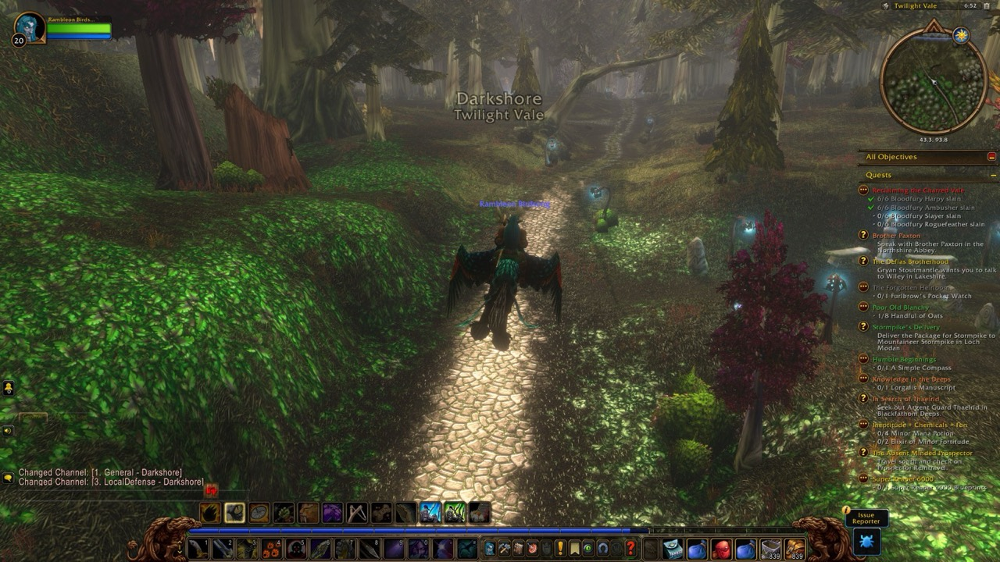
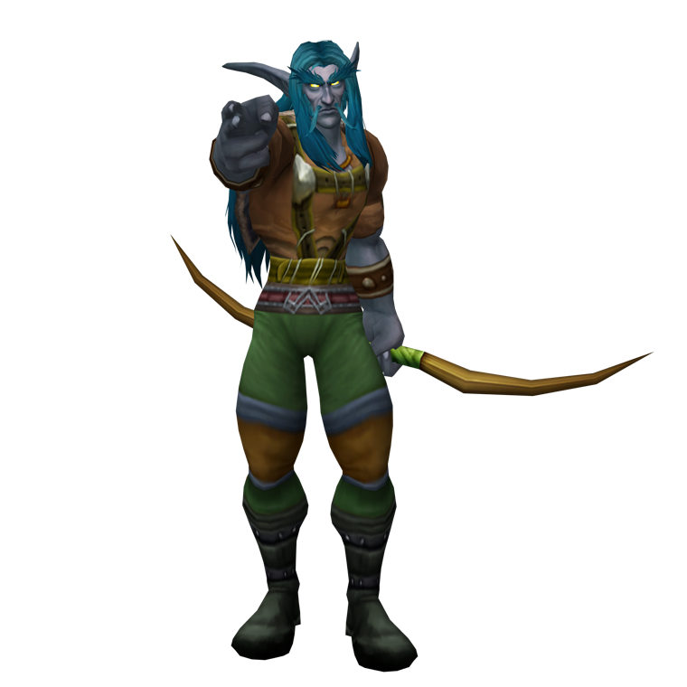
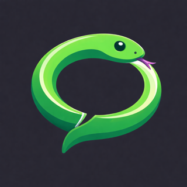
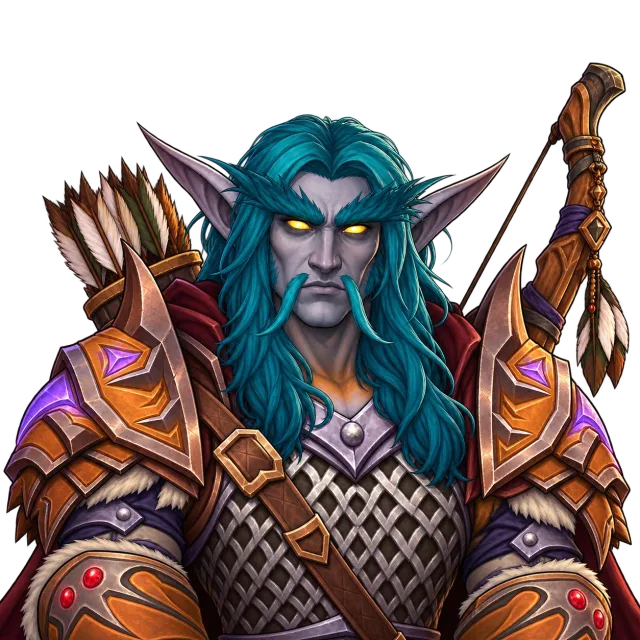
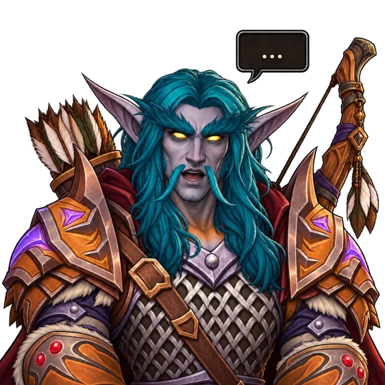
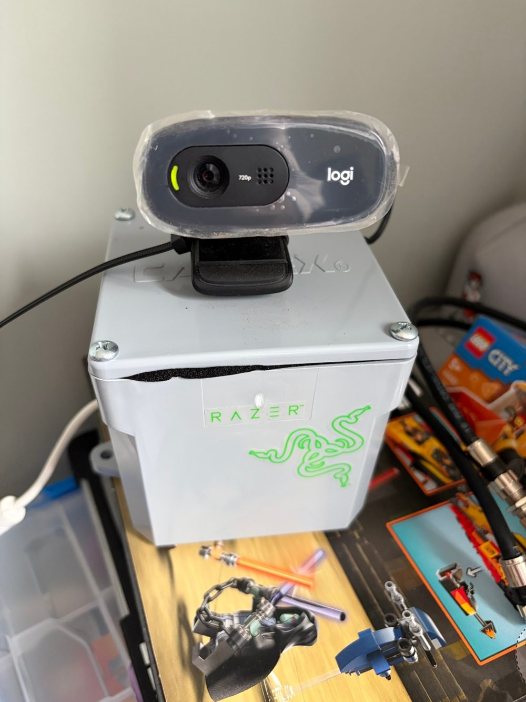

I build open source tools for World of Warcraft, streaming, reality capture and the Mac, most of them with AI in the loop.
Your Azeroth adventure journal. A night of play becomes a timeline, a story page and an AI-written chapter.
Use: Log out, and the night writes itself up.
"A memory layer, not a meter."

Adventure Journal
Rambleon Birdsong · Night Elf Hunter · Level 21
Transparent PNG cutouts of your WoW characters, rendered in the browser from the game files already on your computer.
Use: Drop your WoW folder on the page, get a PNG.
"Your game files never leave your machine."

PNG · 2160 × 2160 · transparentVoice notes from your wrist, transcribed entirely on-device with WhisperKit. No cloud, no account.
Use: Tap your wrist, talk, read it back.
"Never leaves your phone."

An OBS source that shows one image while you are silent and another while you speak, with movement effects and blinking.
Use: Your avatar talks when you do.

silent
speakingA camera node in a junction box. A Raspberry Pi 5 and a Logitech C270 serve a feed that OBS picks up as a media source.
Use: Plug it in, add the feed to OBS.

RTSP · 720p30 · H.264Screenshots and screen recordings at the exact pixel sizes social platforms expect.
Use: Press the hotkey, click, paste at the right size.

Say what I want, shut the laptop and walk off while a Mac mini in the corner does the work.
<!-- LaunchAgent, runs at login --> <string>/opt/homebrew/bin/tmux</string> <string>new-session</string><string>-d</string> <string>-s</string><string>rc</string> <string>claude remote-control --name "Mac mini"</string> <key>RunAtLoad</key><true/>
Use: Say what you want, close the lid, walk away.
Chapter 11, Into the Deadmines: 5h 35m · 6 quests · 277 kills · 6 companions.
The work and the files stay on the mini. The laptop can close, sleep or lose signal.
A webcam wrapped in clear film, clipped to the lid of a grey PVC junction box.
A 2004 strategy guide, read against the game it was written for. Claude drafts, I play.